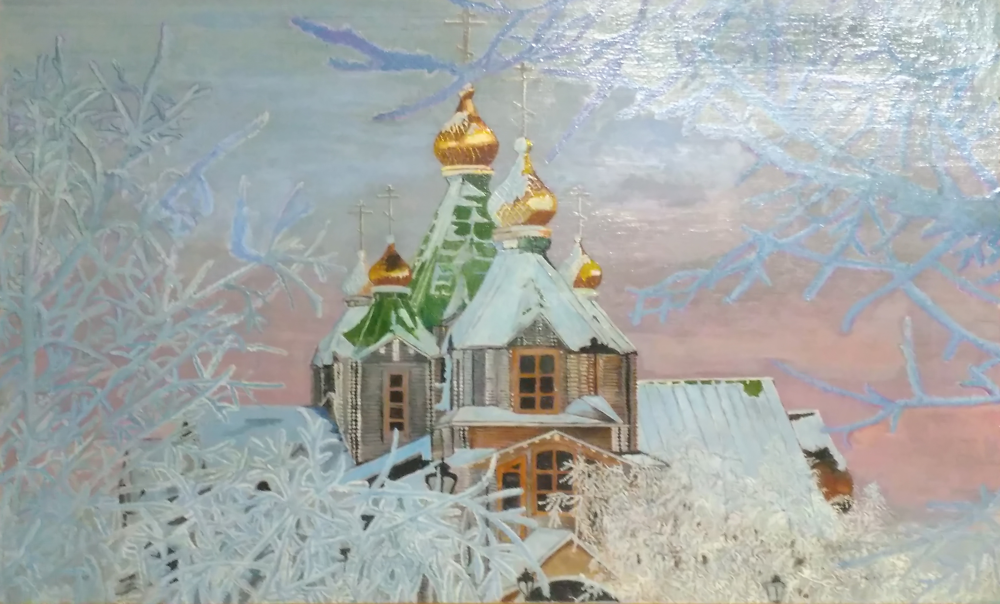

Край Сосновский
Я иду по Сосновским просторам, Всё здесь дышит Россией, теплом, Каждый шаг по особому дорог - Здесь покой для души, здесь мой дом. Вон берёзка в юбчонке короткой Убежала на взгорок к реке, И застыла рыбацкая лодка, А тропинка уже вдалеке Запетляла меж лугом и лесом, Где прохлада и отдых ветрам, И вознёс светлый крест в поднебесье Православный, открытый всем храм. Заходи, поклонись божьим ликам, И иди с просветлённой душой. На ладонях Руси столь великой Край Сосновский лежит небольшой. С сайта: http://www.aforizmov.net/stihi/tags/hram/page/2/